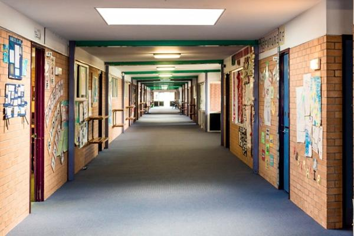

Suicide attempts: Secondary school support
Download the responding to suicide attempts in Victorian Secondary Schools
This resource aims to support secondary schools where staff suspect or are advised that a student has made a suicide attempt. It outlines what a school response to a suicide attempt should entail, provides a flowchart for reference and provides detailed descriptions of key components involved in caring for students at risk.
This resource provides guidance on how to support the entire school community including the student at risk, staff and any other affected students. It is recommended
that the resource be incorporated into your school’s existing student wellbeing policies and emergency management protocols. It should also be used in conjunction with Department of Education & Training Guidelines to assist in responding to attempted suicide or suicide of a student.
Self Harm, where a person injures themselves without the intention of taking their own life (also called Non Suicidal Self Injury), is not the focus of this resource. All incidents
of Self Harm need to be treated seriously and the Victorian SAFEMinds program has developed a range of resources to support school in their response to self harm. School are encouraged to adopt the NIP it in the bud approach to guide decision making when responding to incidents of self harm. There is a range of other information available from
headspace School Support to assist schools with managing issues related to suicide.
In the event of suicide:
- Manage the immediate risk and duty of care to all
- Inform the Principal
- Follow your school and sector's emergency management protocols and contact your department/authority
- Access your school’s Suicide Response Plan. If your school does not have a response plan refer to Victorian state government guidelines OR the School Support section of the website for the Suicide Postvention Toolkit: A guide forSecondary Schools.
- Contact headspace School Support on 0458 037 955 or 1800 248 9-5 Mon-Fri (AEST)
Key actions when responding to a suicide attempt
A suicide attempt is an act carried out by a person with the intention of ending their own life. A suicide attemptby a student can have a significant impact on a schoolcommunity, causing distress and anxiety for fellow students, school staff and parents.There are ten key actions that should guide theschool response:
1. Remain calm, non-judgemental and caring.
2. Always communicate with the parents/carers of the student and any professionals involved in the care of the student.
3. The safety of the student and others is of vital concern when a suicide attempt occurs at school.Keep the student safe and supported, and take them to a safe, private place if they can be moved.
4. Call an ambulance (000) if a student:
– has taken a drug or medicine overdose or
consumed poison
– is seriously injured
– is unconscious, confused, or disoriented
– has bleeding that is rapid or pulsing.
5. Call the Police (000) if a student is threatening harm to self or others, or is so distressed that they are unmanageable in the school environment.
6. Duty of care is primary, however, consider the confidentiality of the student and consider the wishes of the student and their family when communicating about any suicide attempt.
7. Consider the impact of the event on others. Ask student wellbeing or school leadership to check safety and wellbeing of other students, classmates, bystanders and witnesses who may be impacted. Contact parents and carers of other students impacted and at risk, and advocate for support and suicide risk assessment being provided for these students.
8. Refer students appropriately, based on assessment of support needs. Become familiar with the range of mental health and youth support agencies, programs and professions accessible by your school.
9. Inform and liaise with relevant authorities and agencies. Follow Emergency Management critical incident reporting protocols for your school,sector and region. Have student wellbeing or leadership follow up and liaise with hospital or mental health services, or any support service or program, about support planning, communications
and information sharing.
10. Consider the impact of social media on other students. Determine whether information about the attempt is on social media and if this is impacting on other students. The fact sheet Managing social media following a suicide provides tips on how best to manage this.
School response to a suicide attempt
The school’s response to a suicide attempt is a deliberate process aimed at ensuring the immediate and ongoing safety, care and support of a student at risk of suicide, as well as others affected by the situation. Where school staff suspect that an incident may be a suicide attempt an assessment of risk should be carried out as soon as possible. This assessment will inform any further response required by the school to support the student.
If a suicide attempt occurred outside of the school a student may return soon after this, or they may be away for a period of time. Either way once the school is aware of the attempt the school response should be initiated to ensure the student has the required supports in place. This process also informs the school about the current level of risk, any key risk factors and importantly, what other supports the student has available for ongoing care.
The key components of a school response consist of:
Suicide risk assessment
A suicide risk assessment assesses the likelihood and severity of a student’s suicidal intentions. It is used to determine how best to plan for the safety and care of a student at risk of suicide. It should only be undertaken by a trained professional (e.g. a mental health professional or a school staff member with suitable training.) State schools are also able to refer students to Department of Education (DET) Student School Services Officers (SSSOs) and School Nurses with suitable training. Other referral options for suicide risk assessments and advice are Child and Adolescent Mental Health Services (CAMHS) or Child and Youth Mental Health Services (CYMHS) as well as hospital based mental health professionals. A suicide risk assessment is a crucial step in the school response to a suicide attempt.
Safety plan
A Safety Plan can help the school to establish a safe and supportive learning environment for the young person. The development of the plan is a collaborative process between the young person, their parent/caregiver, the school and any other key health agency involved in the care of the young person. It outlines what situations the young person might find difficult, and how these can be managed in order for them to feel safe and supported. Key school staff involved with the young person should be
given relevant information about how to assist the young person in class time or while on school grounds. They do not need access to the complete plan to do this – however
should be provided with the information that affects how they approach or support the young person.
Regularly monitor student progress
Students need to be monitored regularly with their Safety plans reviewed and updated.
Facilitate referral
During the monitoring process school staff may become aware of the need for a student to access additional health support. This might be from a mental health service,
community health service, or general health service. In these circumstances staff should facilitate a referral to the required service in collaboration with the student and their
parent/carer.
Self and staff care
Suicidal behaviour, by its very nature, can be distressing and often traumatising for school communities. Suicidal behaviour can affect school staff in profound
and unpredictable ways, both professionally and personally. It is essential that school staff look after themselves and each other. School leaders need tobe aware that some staff members may have personal experiences and vulnerabilities which need to be
considered in a schools response. Consultation, review,debriefing, employee assistance and referral to support services are all important support options that could be considered.
Suicide exposure
Exposure to a suicide or a suicide attempt can lead to suicide contagion. This refers to the process whereby one suicide or suicide attempt within a school, community, or geographic area increases the likelihood that others will attempt suicide. After a
suicide attempt some students in the school are likely to have an increased risk of suicide.
Suicidal ideation
Suicidal Ideation refers to the presence of any thoughts, plans, images, imaginings or preoccupations a young person may have about ending their own life. Suicidal thoughts can range from a vague thought about ‘not wanting to be around’ to very specific
thoughts and plans about ending their life. Students showing signs of suicidal ideation need to be monitored, supported and referred as soon as possible for a suicide risk assessment.
A Return to School Support Plan aims to ensure the best possible re-integration, safety, care and support for a student who is returning to school following a suicide attempt or mental health difficulties. A support plan should include strategies that aim to keep the student safe, supported and connected withstaff and peers. The plan is ideally negotiated with the student,parents/carers, school wellbeing staff and any mental health
professionals involved in the student’s care before the student returns to school. If this has not occurred then school wellbeing staff should complete a return to school support plan as a priority when the student returns to school.
A Safety Plan and a Return to School Support Plan share many similarities; both guiding how a school will support a student at risk of suicide. The key difference is that a Return to School Support Plan is completed when a student has been away from school for a period of time following a suicide attempt whereas a Safety Plan is often put in place when there have not been any absences from school due to the incident. Schools and health agencies however may use these terms interchangeably.
The Returning to School following Self Harm or attempted Suicide factsheet and the Return to School Student Support Plan can also be used to guide this process
Information sharing,confidentiality and consent
A school can only obtain information about a student’s admission or treatment from a hospital, mental health or health service, community agency or support program with
the consent of parents and carers, or the student themselves. This can mean that a school may be unable to obtain even basic information, such as whether a student has become a client of an agency, without the agency having sought and obtained prior consent for the school to receive this information.Consent is usually given in writing and ideally signed by the student and parents.
Agency procedures can vary so seeking clarification from the agency about its consent procedures is vital if the information a school requires is not being provided.Schools can request that an agency seeks permission from parents and carers, or students, for information to be shared with the school. A school, through its wellbeing team, can also
implement its own consent/permission procedure. Schools can also play a proactive role in negotiating information sharing protocols with agencies and programs used by students,as part of student wellbeing practice.
Return to School Process
- Schedule a Return to School Meeting with student, parents/carers, school wellbeing staff and involved health care professionals to discuss student needs
- Implement already developed Safety Plan OR Develop and implement a Safety Plan/Return to School Support Plan
-Make regular contact with student to discuss their progress/concerns and developments
-Liaise regularly with parents/carers
-Refer student to appropriate support service as required
-Regularly review and update the Safety Plan according to the student’s health and wellbeing and staff feedback
-Document decisions, actions and outcomes
-Ensure staff involved in responding to and supporting the student have the opportunity for debriefing and support.
SAFEMinds
(Schools and Families Enhancing Minds)
SAFEMinds is a professional learning and resource package available to all primary and secondary schools across Victoria.
It aims to:
– enhance early intervention mental health support for children and young people in schools; specifically regarding mild mood disorders (anxiety and depression) and self harm
– increase engagement of parents and carers with schools to more effectively support their child’s mental health
– develop clear and effective referral pathways between schools and community youth and mental health services.
SAFEMinds provides a suite of online materials for the whole school community, including teachers, school support staff and parents and carers, as well as a range of targeted faceto-face professional learning opportunities. The package is underpinned by an early intervention approach, NIP it in the bud!